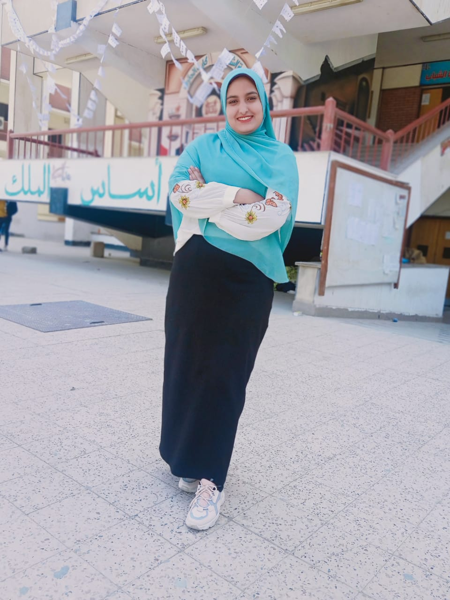

الاسم : هاجر محمود سيد حسن
كلية : تربية طفولة مبكرة جامعة أسيوط
خريجة : ٢٠٢١
هيد لجنة تنظيم فى تيم PRT
نائب لجنة التنظيم نموذج محاكاة مجلس النواب
نائب تنظيم فى كوادر الشبابية
نائب موارد بشرية فى جريدة جامعات مصر
دبلومة فى علوم الشريعة بتقدير امتياز
منسق مساعد سند شباب صعيد على مستوى محافظة أسيوط
منسق مساعد لجنة المرأة فى ائتلاف الشباب المصرى
عضو لجنة مرأة فى ائتلاف العربى الوطنى
سفيرة ضمن وزارة السلام الدولى لتنمية المستدامة
امين لجنة الفنية باتحادات طلابية كلية تربية طفولة
هيد Hr مركزى TD لكوادر الشبابية
مسؤل تنظيم فى كلية تربية طفولة
هيد تتظيم فى مبادرة اطمن معانا
عضو فى مبادره حياة كريمة
عضو تتظيم فى اتحاد تحيا مصر
نائب وزير الاسكان فى نموذج محاكاة
تنظيم رحلات داخلية
مشاركة فى ملتقى شباب خاص بوزاره شباب ورياضة
ليدر اسرة Joy
عضو فى حقوق مرأة بجامعة أسيوط
المشاركة فى كثير من انشطة طلابية ومبادرات
لغات :
لغة عربية
لغة الأجنبية
لغة الفرنسية
لغة الاسبانية
لغة الألمانية
لغة الايطالية
ولغة تركية جيد الى حد ما
كورسات :
Hr
Pr
Markting
Soft Skills
Com . skilld
مهارات :
العمل تعاونى
القيادة